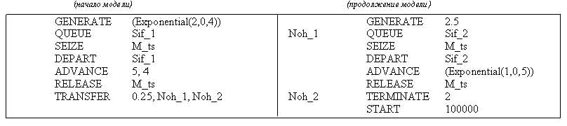

Сколько в среднем пройдет заявок через прибор DIC за время моделирования?
50000
Чему равна загрузка прибора DIC?
0,525
По какому закону распределены интервалы времени между заявками в потоке, входящем в прибор DIC?
по равномерному
Чему равен средний интервал между заявками во входящем потоке?
20
По какому закону распределена длительность обслуживания заявок в системе?
по детерминированому
Чему равна интенсивность входящего потока заявок?
0,05
Чему равна средняя длительность обслуживания заявок в системе?
10,5
Чему равно число обслуживающих приборов в системе?
1
По какому закону распределены интервалы времени между заявками во входящем в СеМО потоке?

по равномерному
Сколько в среднем пройдет заявок через систему за время моделирования (округлить до целого значения)?
116279
Сколько узлов содержит сетевая модель?
2
Чему равен коэффициент передачи первого узла?
4
Чему равен коэффициент передачи второго узла?
3
По какому закону распределена длительность обслуживания заявок в первом узле?
по детерминированному
По какому закону распределена длительность обслуживания заявок во втором узле?
по экспоненциальному
Чему равно количество обслуживающих приборов в первом узле?
5
Чему равно количество обслуживающих приборов во втором узле?
1
По какому закону распределены интервалы времени между заявками во входящем в прибор DIC потоке?

по экспоненциальному
Сколько в среднем пройдет заявок через прибор DIC за время моделирования?
25000
Чему равна загрузка моделируемой системы (прибора DIC)?
0,75
Чему равен средний интервал между заявками во входящем в прибор DIC потоке?
20
По какому закону распределена длительность обслуживания заявок в системе?
по равномерному
Чему равна интенсивность входящего в прибор DIC потока заявок?
0,05
Чему равна средняя длительность обслуживания заявок в системе?
15
Чему равно число обслуживающих приборов в системе?
1
Сколько в среднем пройдет заявок через систему за время моделирования?

200
По какому закону распределены интервалы времени между заявками во входящем в СеМО потоке?
по равномерному
Сколько узлов содержит сетевая модель?
2
Чему равен коэффициент передачи первого узла?
2
Чему равен коэффициент передачи второго узла?
1
По какому закону распределена длительность обслуживания заявок в узле с прибором 1?
по детерминированному
По какому закону распределена длительность обслуживания заявок в узле с прибором SEAH?
по экспоненциальному
Чему равно количество обслуживающих приборов в первом узле?
1
Чему равно количество обслуживающих приборов во втором узле?
5
Чему равна средняя длительность обслуживания заявок в первом узле?
0,5
Чему равна средняя длительность обслуживания заявок во втором узле?
4
Чему равна интенсивность обслуживания заявок в первом узле?
2
Чему равна интенсивность обслуживания заявок во втором узле?
0,25
Чему равен интервал времени между заявками во входящем в СеМО потоке?
4
Чему равна интенсивность источника заявок, входящих в СеМО?
0,25
Чему равна загрузка узла с прибором 1?
0,25
Чему равна загрузка узла с прибором Seah?
0,2
Чему равна нагрузка первого узла?
0,25
Чему равна нагрузка второго узла?
1
Чему равно среднее число работающих приборов в первом узле?
0,25
Чему равно среднее число работающих приборов во втором узле?
1
Чему равно среднее число простаивающих приборов в первом узле?
0,75
Чему равно среднее число простаивающих приборов во втором узле?
4
Чему равен коэффициент простоя первого узла?
0,75
Чему равен коэффициент простоя второго узла?
0,8
Чему равна интенсивность поступления заявок в первый узел?
0,5
Чему равна интенсивность поступления заявок во второй узел?
0,25
Чему равна средняя длительность обслуживания заявок в первом узле?
0,5
Чему равна средняя длительность обслуживания заявок во втором узле?
4
Чему равна интенсивность обслуживания заявок в первом узле?
2
Чему равна интенсивность обслуживания заявок во втором узле?
0,25
Чему равен интервал времени между заявками во входящем в СеМО потоке?
4,3
Сколько в среднем пройдет заявок через систему за время моделирования?

50000
По какому закону распределены интервалы времени между поступающими в систему заявками 1-го класса?
по экспоненциальному
По какому закону распределены интервалы времени между поступающими в систему заявками 2-го класса?
по детерминированному
Чему равен средний интервал времени между поступающими в систему заявками 1-го класса?
4
Чему равен средний интервал времени между поступающими в систему заявками 2-го класса?
2,5
Чему равна интенсивность поступающих в систему заявок 1-го класса?
0,25
Чему равна интенсивность поступающих в систему заявок 2-го класса?
0,4
Чему равно число узлов в модели?
1
Чему равно количество поступающих в систему классов заявок?
2
По какому закону распределена длительность обслуживания заявок 1-го класса?
по равномерному
По какому закону распределена длительность обслуживания заявок 2-го класса?
по экспоненциальному
Чему равна средняя длительность обслуживания заявок 1-го класса?
5
Чему равна средняя длительность обслуживания заявок 2-го класса?
5
Чему равна интенсивность обслуживания заявок 1-го класса?
0,2
Чему равна интенсивность обслуживания заявок 2-го класса?
0,2
Чему равно количество обслуживающих приборов в системе?
1
Чему равна загрузка системы, создаваемая заявками 1-го класса?
1
Чему равна загрузка системы, создаваемая заявками 2-го класса?
1
Чему равен коэффициент простоя системы, создаваемого заявками 1-го класса?
0
Чему равен коэффициент простоя системы, создаваемого заявками 2-го класса?
0
Чему равна нагрузка системы, создаваемая заявками 1-го класса?
2,1875
Чему равна нагрузка системы, создаваемая заявками 2-го класса?
2
Чему равна загрузка системы?
1
Чему равна нагрузка системы?
4,1875
Чему равен коэффициент простоя системы?
0
С помощью какого оператора создаются транзакты в GPSS-модели?
GENERATE
С помощью какого оператора уничтожаются транзакты в GPSS-модели?
TERMINATE
С помощью какого оператора осуществляется задержка транзакта на заданное время в GPSS-модели?
ADVANCE
С помощью какого оператора осуществляется занятие транзактом одноканального прибора в GPSS-модели?
SEIZE
С помощью какого оператора осуществляется удаление транзакта из одноканального прибора в GPSS-модели?
RELEASE
С помощью какого оператора осуществляется занесение транзакта в очередь в GPSS-модели?
QUEUE
С помощью какого оператора осуществляется удаление транзакта из очереди в GPSS-модели?
DEPART
С помощью какого оператора осуществляется вход транзакта в многоканальное устройство в GPSS-модели?
ENTER
С помощью какого оператора осуществляется удаление транзакта из многоканального устройства в GPSS-модели?
LEAVE
После какого GPSS-оператора транзакт наверняка перейдет в блок с меткой haha?
TRANSFER ,haha
TEST L 10,5,haha
С помощью какого оператора описывается емкость многоканального устройства в GPSS-модели?
STORAGE
С помощью какой команды запускается процесс моделирования в GPSS World?
START
Что такое RN1 в системе GPSS?
генератор случайных чисел №1
Как называется динамический объект GPSS-модели, движущийся в заданной алгоритмом моделирования последовательности?
транзакт
С помощью какого GPSS-блока значение некоторой случайной величины заносится в таблицу для построения гистограммы этой величины?
tabulate
С помощью какой системной переменной можно получить текущее модельное время?
C1
AC1
Как изменяется модельное время в GPSS-модели?
дискретно, до ближайшего события
Сколько транзактов может находиться в GPSS-модели одновременно?
один
много
Укажите методы формирования равномерно распределенных случайных величин
метод квадратов
метод произведений
мультипликативный конгруэнтный метод
Укажите виды проверки программных генераторов равномерно распределенных случайных чисел
проверка на периодичность
проверка на случайность
проверка на равномерность